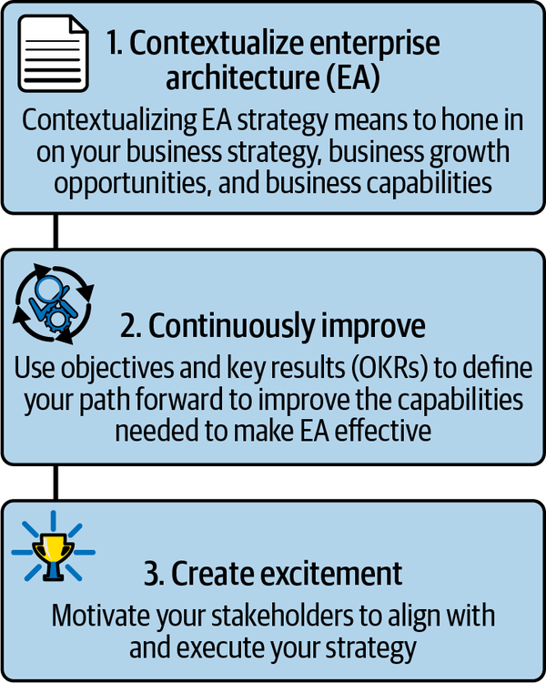
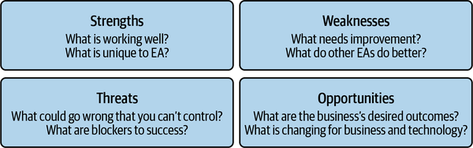

Chapter 1 shared how enterprise architecture is supposed to define the strategic north star that guides solving enterprise-wide complex problems and transformations. Enterprise architecture also defines the principles, standards, and best practices that enable all software engineering teams to deliver high-quality, resilient, cost-effective, and secure software.
Just as enterprise architecture defines the strategic north star for business and technology initiatives, enterprise architecture needs its own strategic north star to establish itself as an effective function. Dogfooding is the practice of using your own products and services to see how well they work and identify opportunities. This chapter discusses how to dogfood strategy by pulling together everything this book has covered so far into a framework to define your own enterprise architecture strategy.
Defining the strategy for a strategic function may sound a bit meta but is really quite essential to provide enterprise architecture’s value proposition and focus efforts. Figure 13-1 illustrates a framework for defining such a strategy.

The enterprise architecture strategy framework has three steps:
Contextualize enterprise architecture.
Continuously improve.
Create excitement.
Let’s now look deeper into the first step.
It is important to recall that enterprise architecture is broader than information technology (IT). Enterprise architecture is effective and successful when it can provide a holistic, feasible strategy for delivering business outcomes through the usage of technology. That holistic strategy has to cover all the aspects of the enterprise, from operations to delivery and compliance, in terms of alignment and evolution of people, processes, and tools.
This strategy must occur in the context of your own business needs. Chapter 8 discussed the principle of contextualized understanding. Hence, the first step in defining your own enterprise architecture strategy is to deeply understand your business strategy, business growth opportunities, and business capabilities.
How do you go about understanding your business growth strategies? Well, it’s likely that there is a corporate business strategy that is well defined and iteratively changing each year in response to new information. First, you need to comprehend what that is by partnering with your corporate strategy group and/or discussing with your senior leadership.
Generally, corporate strategy includes a business model. A business model describes how the business delivers products to the market and drives profit and growth. It defines the customer base and unique business characteristics for competitive edge, and it determines what products and services make up the core business revenue streams. Enterprise architecture doesn’t usually own the business model, but if a business model is lacking, enterprise architecture can drive the need and collaboration to define it.
Enterprise architecture can further contribute to the business model by staying on top of technology trends to figure out how they should be incorporated into business growth. Ways to do that include learning from industry research firms like Forrester and Gartner, and from industry conferences that pertain to your technology areas. For example, in the cloud industry, major public cloud service providers such as Amazon Web Services (AWS), Microsoft Azure, and Google Cloud Platform (GCP) hold their own conferences.
Enterprise architecture does own the business capability model, which describes the capabilities necessary to support delivering the products and services to the customers defined by the business model. Business capabilities were covered in Chapters 8 and 12. Speaking of Chapter 12, based on the enterprise architecture assessment framework described there, you would have zeroed in on the desired business outcomes and capability gaps that need to be overcome to achieve those outcomes, which brings us to step 2 in the enterprise architecture strategy framework.
The understanding of business growth strategy, business outcomes, and capability gaps is key to informing your enterprise architecture strategy, as defined by objectives and measurable objective key results (OKRs). These objectives are twofold:
One set focuses on what enterprise architecture as a function and enterprise architects as a role need to do to drive strategy.
One set focuses on architecture practices to enable software delivery and includes all the necessary components of architecture decisioning, such as standards, templates, processes, and tools.
Chapters 2 through 6 described a set of sample OKRs based on similar analysis to establish an effective enterprise architecture strategy. These OKRs related to the principles established by the very short manifesto defined in Chapter 7 and explored in Chapters 8 through 11:
This OKR is all about establishing a culture of trust, identifying and working with stakeholders to get them to agree with—and implement toward—a stated direction. It relates to the principle of contextual understanding over siloed decision making described in Chapter 8.
This OKR covers the importance of integrating intuitive and usable architecture information with software delivery processes. It relates to the principle of tangible direction over stale documentation described in Chapter 9.
This OKR emphasizes the duality of effective standards in needing to be both easy to adhere to and governed to ensure adherence. It relates to the principle of driving behavior over enforcing standards described in Chapter 10.
This OKR addresses the nature of architecture decisions and the need to balance strategic and tactical decisions. It relates to the principle of evolution over frameworks described in Chapter 11.
An additional tool that you can use to inform your OKRs is a strength, weakness, opportunity, and threat (SWOT) analysis, as illustrated by Figure 13-2.

The SWOT analysis should also be conducted in collaboration with enterprise architecture’s key stakeholders across the enterprise, inclusive of business, technology, operations, and compliance organizational units. To perform a thorough SWOT analysis, consider both internal and external factors. For instance, when brainstorming strengths and weaknesses, consider not just what enterprise architecture would say about itself, but what others say about enterprise architecture. Also, keep in mind that strengths are what provide advantages or benefits, whereas weaknesses result in risks.
For opportunities, consider changes to policy, regulations, and trends in technology and industry to identify opportunities that enterprise architecture can exploit in a positive way. Some opportunities can also be threats, such as technology trends that aren’t capitalized upon. For instance, are there new technologies that could be used? How about your competitors—are they using new technologies that give them an edge on their products and services? Are you at an inflection point, with disruptors on the horizon?
Limit your SWOT analysis to the top 5–10 specific ideas in each quadrant. A lengthy analysis can become unwieldy.
Any OKRs that you define should demonstrate progress toward your desired business outcomes. While any given key result may make only an incremental improvement, the combined results should drive transformative changes. You can revisit KRs year to year, and even the objectives themselves, to select the specific capabilities to focus on improving.
As a result, your OKRs become your three-to-five-year roadmap. Showing the top items that did not make the prioritization cut can also be compelling. It can be eye-opening for stakeholders to realize what you’re not going to be able to do due to constraints in resources and dependencies. OKRs also help set their expectations for what is achievable and where stakeholders are a dependency to make an OKR successful. That brings us to step 3 in the enterprise architecture strategy framework—creating excitement.
Much of what enterprise architecture does depends on others, and a strategy for effective enterprise architecture is no different. Thus, keep in mind that a strategy that stakeholders rally around is a strategy that will deliver results.
Communication and marketing therefore make up the last step of the framework to define enterprise architecture strategy, and they must be done deliberately and continuously in the lifecycle of both defining and executing the strategy. Chapter 6 discussed communication in the context of gaining alignment; this step in the enterprise architecture strategy framework goes further to say that you also need to create excitement. Genuine excitement and caring about the outcomes are key to enabling sustained stakeholder engagement through the long haul of multiyear execution.
What gets people excited? Relevance and incentives are what come to my mind. If you can show that your strategy is relevant to stakeholders’ desired outcomes, their needs, and their specific pain points, you will be in a good position to appeal to them. Answer the question, “What’s in it for them?” Why should they care, when there are a thousand other things for them to take care of?
Reiterate that you are making stakeholders’ lives easier.
In this step, you should establish a communication and marketing strategy. Go on a roadshow to socialize the enterprise architecture strategy with your key stakeholders, at both senior and junior levels. Identify or establish common forums where you can return to provide updates.
Determine the brand identity that you want to associate with enterprise architecture. If you personified enterprise architecture, what values or adjectives would you use? Trustworthy, friendly, and productive come to my mind. Starting with values is important because you want to appeal to people’s sense of why enterprise architecture exists, along with the enterprise architecture value proposition, rather than what or how enterprise architecture fulfills it.
You want to preempt the notion that you are adding bureaucracy or unnecessary complexity as part of your what and how. Rather, you want to sell your brand and showcase that you are adding value for stakeholders and are ultimately making their lives better. As a bonus, it happens to be true: enterprise architecture’s value is in enabling everyone to build better software as one team, for the good of the enterprise as a whole.
Your branding will come through as part of your communication and marketing strategy and will help to create excitement around enterprise architecture and what enterprise architecture is doing to help. It may be odd to think about branding a function rather than a software product or service, but it is in fact the same technique. And in a function that depends on humans to align and engage, branding is a powerful way to instill trust and build excitement.
If your enterprise architecture is associated with a negative brand, declare a reset as part of your strategy. Resetting and reinventing your brand are very possible and just need consistency and repetition to change people’s perception.
In branding, appeal to people’s sense of why enterprise architecture does what it does, not what or how it does it.
Share wins periodically to demonstrate tangible progress and to prove that the needle is moving in the direction of forward progress. This part of the story is easier if you can quantify gains with metrics that people care about.
In addition to the specific metrics tied to your OKRs, are there any additional metrics that tell the story of enterprise architecture’s value that you can share? For instance, consider the functions of enterprise architecture:
Are strategies being produced and operationalized? For example, if enterprise architecture has driven a resiliency strategy, can you show with data that applications are improving their resilience? Maybe applications are recovering from failures faster, or maybe they aren’t even experiencing failures as often.
Can you show that more applications are meeting architecture standards? Better yet, can you show progress in the business benefits of those standards, such as reduction in labor, improvement in cost efficiency, and/or reduction in risk?
By taking a deliberate stance on enterprise architecture’s branding, quantifying outcomes and making them relevant, your communication and marketing of your enterprise architecture strategy will help to make it successful.
Just as enterprise architecture delivers strategy for the enterprise, so too does enterprise architecture need a strategy for itself in order to be an effective function of the enterprise, for the enterprise.
The enterprise architecture strategy framework is comprised of three main steps:
As mentioned in Chapter 12, context in the form of understanding business needs, business outcomes, business strategy—and the business capabilities that power that strategy to achieve those outcomes and solve for those needs—is essential to ground the enterprise architecture strategy. In fact, Chapter 12’s framework to assess enterprise architecture’s current state would be an input into this step.
In a modern organization, business needs are fluid and technology is dynamic. Therefore, enterprise architecture itself must also be continuously improving to thrive as the strategic leader of an organization. The OKR framework provides a structure to define a strategic roadmap with measurable outcomes demonstrating incremental improvement. The specific OKRs are informed by the context defined in step 1.
Given that enterprise architecture cannot operate in a silo—and in fact is chartered in part to break silos—it is essential that stakeholders are aligned and moreover truly motivated to engage in helping enterprise architecture’s strategy be successful. By developing a strong brand for enterprise architecture, and ensuring that communication and marketing emphasizes the relevancy of enterprise architecture to stakeholder needs, the enterprise architecture strategy is likely to gain support.
You can use the enterprise architecture strategy framework to establish your own tailored strategy for establishing an effective enterprise architecture function and effective architecture practices for your organization. A key output of effective architecture practices is high-quality decisions. The next and final chapter provides a framework to enable high-quality architecture decisions.